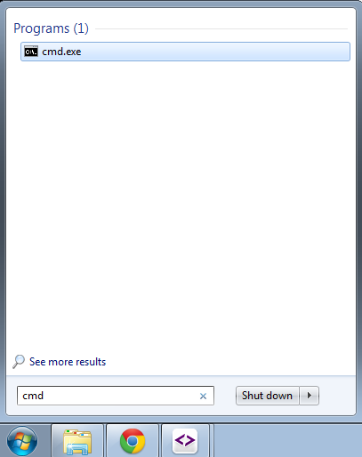
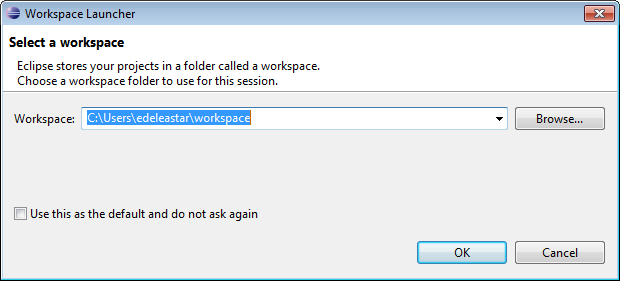
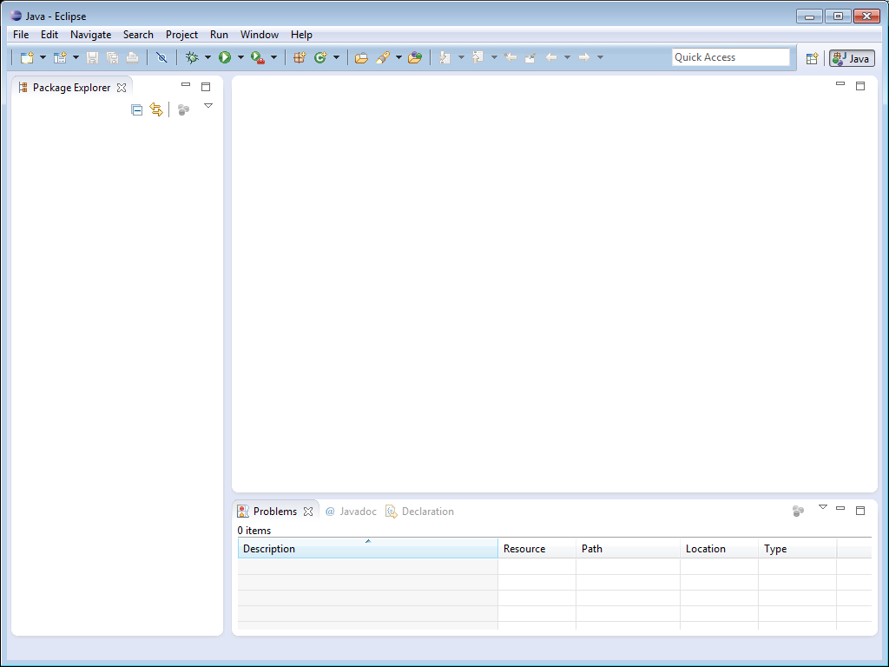
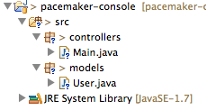
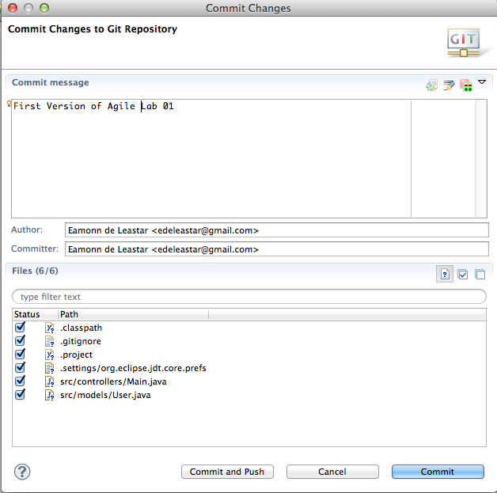

Objectives
The objective of this lab is to install and configure your development workstation and to bring into focus some of the terms and concepts covered in the opening lecture.
Install JDK
The first step is to locate the Java Software Development Kit in this Oracle web site:
On this page, download the latest JDK and save to your local disk. Once it is downloaded, locate the file on your hard disk (it may be on your desktop) and run it.
During the installation process it will install two subsystems
- JRE
- JDK
Keep an eye on where these are installed, as both are important. Depending on how you choose to organise your system, you might have the following folder structure containing the java subsystems:

Verify JDK
Open a Command Prompt in Window. Do this on Windows by selecting the "Start" button, typing 'cmd' into the run field:

Type cmd into the open field
If you type the following on the command line:
java -versionthis will verify that java is installed correctly, and will display the version number:

It will be more recent than the above screenshot.
Install Eclipse
Eclipse is a free, open source, Integrated Development Environment for Java. We will use it during the labs as the main environment for writing, testing and exploring Java programs.
Visit the Eclipse web site:
Select the "Downloads" link and select the "Eclipse for Java and DSL Developers" distribution...

You may be asked to select from a specific "mirror" - and the save the archive to your local drive.
Once the archive is downloaded, we now need to install it. Unlike the JDK install earlier, there is not a standard setup or Eclipse. All we need to do is unarchive the file we have just downloaded, and it should be ready to run.
Windows has a built-in archive feature, however this can be very slow. You may already have an archive tool installed - if so use it to unarchive the eclipse distribution. If not, then you might consider installing this one here:
Either way, you should now unarchive the eclipse distribution. Here, we use the 7-Zip "Extract here" feature:

Extraction make take a minute or two..

Once extracted, a new folder should appear next to your eclipse archive:
Before we explore it, we should move it to a more logical path. Create a new folder called "appdev" or some simple name (without spaces or upper case letters) somewhere on your computer (the C: drive in this example). Move the "eclipse" folder just extracted into this folder, creating the following structure:

Exploring the folder, we can see the "Eclipse.exe", which will launch the IDE

You may wish to place a shortcut to this file somewhere convenient.
Before we launch Eclipse, we will carry our one more step. We will create an new empty folder in the "appdev" folder, which will be where we store the Java projects we are going to create. Create a folder called "workspace" inside appdev:

Run the Eclipse IDE now. After a splash screen, you will be asked to locate a "Workspace" folder.

By selecting the "Browse" button, navigate to the "workspace" folder you just created

and press "Ok". Also press OK on the subsequent dialog and Eclipse should be up and running:

Verify Eclipse
We will create a very simple "Hello World" application to test the installation. Eclipse is currently displaying what is called the "Welcome" screen. We can remove this and reveal the standard workbench by pressing the "close" button on the welcome screen:
This reveal the standard Eclipse "Java Perspective":

We can simplify the perspective a little by closing the "Task" view:
and the "Outline" view

on the right, giving us a slightly simpler perspective:

HelloWorld
We will now create our first Java Application. We do this by first creating a Java project, selecting File->New->Java Project:

Call the project HelloJava:

... and press Finish:

This has created a project called HelloJava - we can explore this project in the "Package Explorer" window:
Currently the project is empty. We can add a new class to the project as follows: Select the src node in the HelloJava project and right click (to bring up the context menu):

Select Class, which will bring up the New Java Class dialog::
Call the class Hello as shown above. Also, make sure to select the public static void main check box is checked:

Press finish - and the class hello.java will be generated:

Inside the opening and closing braces of the main() method, enter the following:
System.out.println("Hello Everyone!");So that the full class looks like this:

We can now proceed to execute the program. We should expect it to print the message indicated on the console.
To execute, right click on Hello.java in the Package Explorer:
Select Run As->Java Application as shown above. The application will execute. The output is visible in the Console view along the end of the perspective:
We will make one small configuration change to Eclipse. In this course we choose to layout our source code a little differently to the default. We use a C Style formatting, instead of the built in Sun style.
This style is already prepared for you and you can download it
Save this file somewhere on your computer (right click and select Save as...). In Eclipse, select Window->Preferences .In the Preferences dialog select Java->Code Style->Formatter...
Press the import button:
Navigate to and select the CStyle.xml file we saved above:

Press Apply and Ok...

This has introduced a revised source code formatter into our program. We can trigger this at any time by selecting Source->Format

This will have produced a very subtle change to the layout:

We can further tidy up the source by manually removing the comments (for the moment):
Finally, note that eclipse is a folding editor. This means we can remove from view selected elements if we wish to have an uncluttered high level view of the source. Hover the cursor over the main method:
... the press the mouse once, and the method will fold:

Pressing it again will expand ....

Data Structure
Create a new project - select 'File->New->Project' select "Java Project". Fill out the "New Java Project" wizard as shown:

Press "Finish". In the new project, select 'src', right click and select 'new->package'. Call the package 'models' and press finish:

Selecting "models", select "File->New" and select "Class". Name the class "User":

Edit the User.java source - and replace the current contents with the following:
package models;
public class User
{
public String firstName;
public String lastName;
public String email;
public String password;
public User()
{
}
public User(String firstName, String lastName, String email, String password)
{
this.firstName = firstName;
this.lastName = lastName;
this.email = email;
this.password = password;
}
}In a new package called 'controllers', create a class called "Main" (follow same steps used to create User class above). Replace the contents of Main.java with the following
package controllers;
import java.util.ArrayList;
import java.util.List;
import models.User;
public class Main
{
public static void main(String[] args)
{
List<User> users = new ArrayList<User>();
users.add(new User("Bart", "Simpson", "bart@simpson.com", "secret"));
users.add(new User("Homer", "Simpson", "bart@simpson.com", "secret"));
users.add(new User("Lisa", "Simpson", "bart@simpson.com", "secret"));
System.out.println(users);
}
}The workbench should now look as follows (ignore the 'labs' node in package view for the moment):
Launch the application as follows. Do this by selecting "Main.java" in the Package Explorer and select "Run->Run As->Java Application". This executes the application (running main) which in turn prints output to the console.

Now explore the "users" data structure in the debugger: Editing the Main.java source file, double click inside the scroll bar on first line of the main method:

This creates a breakpoint (visually a small blue bubble). Run the program again: - this time under the debugger. Quickest way to do this is to press the "Debug last launched" button.
You may see the permissions dialog again:

and also a switch perspective dialog:

Finally, the workspace will be reconfigured as follows:

Selecting 'Run->Step Over" from the eclipse menu several times will execute each line of the main method.

Note the editor view shows each line under execution. The Variables view shows the contacts data structure being populated.

Exploring the variable window should enable you to inspect each contact object as it is inserted. This variable window can also show a "Logical View" of the data structure (press the second button in the toolbar)

To terminate the application, press the button in the Console view:

... and the restore the Java "Perspective":
If you are not familiar with debugging in eclipse, spend some time repeating the above steps. In particular, hover over the various tool bar buttons visible in the debug perspective to get an general understanding of how to control and explore a running application.
Git Version Control
Before moving on to the next step - we will commit this project to 'git' version control.
First, right click on the project and select 'Team->Share Project'

In the next dialog select 'git'

and then you will see this:

Tick the 'Use or create repository', and then press the 'Create Repository' button:

Noting particularly noticable will change -

But you can now press finish.
You may notice that your ecipse project icons look a little different.

Now, select the project again in Package Explorer, select 'Team' - and this time the menu will be different:

Select 'Commit' - and enter details as shown here:

Press "Commit" - and now the icons will change again:

Although we haven't saved this to any external server, we have preserved the applications current structure.
Pattern
Create a new package in the eclipse project, called 'utils'

Introduce the following class into that package:
package utils;
import java.io.FileNotFoundException;
import java.io.FileWriter;
import java.io.IOException;
import java.io.PrintWriter;
public class FileLogger
{
private static FileLogger logger;
private FileLogger()
{
}
public static FileLogger getLogger()
{
if (logger == null)
{
logger = new FileLogger();
}
return logger;
}
public boolean log(String msg)
{
try
{
PrintWriter writer = new PrintWriter(new FileWriter("log.txt", true));
writer.println(msg);
writer.close();
}
catch (FileNotFoundException ex)
{
return (false);
}
catch (IOException ex)
{
return (false);
}
return (true);
}
}Project workspace should be structured as follows:

Edit the Main.java, replacing the main method with the following:
public static void main(String[] args)
{
FileLogger logger = FileLogger.getLogger();
logger.log("Creating user list");
List<User> users = new ArrayList<User>();
users.add(new User("Bart", "Simpson", "bart@simpson.com", "secret"));
users.add(new User("Homer", "Simpson", "bart@simpson.com", "secret"));
users.add(new User("Lisa", "Simpson", "bart@simpson.com", "secret"));
System.out.println(users);
logger.log("Finished - shutting down");
}Note that there will be one error - the FileLogger class is being used in the Main.without being imported. Selecting the error in the editor will pop-up some autocorrect suggestions:
If you select the one shown then the appropriate import will be inserted into the class:
import utils.FileLogger;Execute the program. Do this be selecting main.java in the package explorer, and selecting menu "Run->Run As->Java Application" as before.
The console should list data structure as before, and a log file "log.txt" should be generated. As the file is just generated, it will not be visible in the workspace. To view it, select the 'pacemaker-console' project in the package explorer, and select "File->Refresh". Package explorer will be updated to reflect the new file generated in the workspace:

Double click log.txt to view the log:

Before we finish this step, we can 'commit' changes we have just made. In Package Explorer, select the project, right click and select 'Team->Commit'.

Fill out as shown above (note: we do not commit the log file) - and press 'Commit'
Notice the changes in the package explorer icons:
Component
Download the following XStream jar file:
In Eclipse Package Explorer, create a new folder "lib". Do this be selecting the project, select "File->New->Folder". In the offered dialog, enter "lib" as the file name. Drag the xstream.jar file already downloaded into the lib folder: Workspace should look like this

Right click on xstream- and select "Build Path->Add to Build Path". Workspace should now look like this:

Replace the main function (not the entire class Main) with this version here:
public static void main(String[] args) throws IOException
{
FileLogger logger = FileLogger.getLogger();
logger.log("Creating user list");
List<User> users = new ArrayList<User>();
users.add(new User("Bart", "Simpson", "bart@simpson.com", "secret"));
users.add(new User("Homer", "Simpson", "bart@simpson.com", "secret"));
users.add(new User("Lisa", "Simpson", "bart@simpson.com", "secret"));
System.out.println(users);
logger.log("Serializing contacts to XML");
XStream xstream = new XStream(new DomDriver());
ObjectOutputStream out = xstream.createObjectOutputStream(new FileWriter("users.xml"));
out.writeObject(users);
out.close();
logger.log("Finished - shutting down");
}Use the autocorrect feature to correct the package import errors. If used appropriately, the following import statements should be added to the class:
import java.io.FileWriter;
import java.io.IOException;
import java.io.ObjectOutputStream;
import java.util.ArrayList;
import java.util.List;
import com.thoughtworks.xstream.XStream;
import com.thoughtworks.xstream.io.xml.DomDriver;
import pim.log.FileLogger;Run the program (use steps as before). A file called "users.xml" will have been generated. Using the refresh step from before, make this file visible in package explorer, and open the file.
Two views should be visible. A "Design" view:

and a "Source" view

We have used a component (xstream) to convert an internal data structure into an XML stream, which we have written to a file.
See if you can commit the changes we have just made to git.
Framework
Visit the following site:
And download the latest version of the Play framework that doesn't use activator (probably 2.2.6).
Run through the "Getting Started" (7 steps) in the official guide here:
Once completed, do this tutorial here:
Dont worry to much if some of the concepts are alien, we going to use a specific subset of the features of the framework in our labs. Also, it will be several weeks before we revisit this framework, so you can do the tutorial next week or the week after if you wish.
Exercises
Data Structures
The Data Structure example - step 6 - used the ArrayList data structure. For an elegant introduction to this, and the collections framework as a whole, take a look at this trial here:
In particular, the ArrayList is discussed here:
See if you can modify the code to use LinkedList instead of ArrayList. What would be the benefits?
Components
For many uses, XML has largely been replaced with JSON:
Which offers some considerable benefits as a simple representation of data structures. The XML library you used in Step 7 also supports JSON.
There are only two small changes required to putput JSON - which are contained in the first code fragment. The existing xtream jar file will not be sufficient for it to run (although it will compile successfuly). Following the instructions for incorporating a jar file in step 7, see if you can import these two libraries here:
If these are part of the build path, then the xstream component should be able to generate json versions of the data structure.
Frameworks
Rich Client applications are somewhat out of fashion these days, however there is a substantial collection of open source Eclipse RCP applications here:
This one here is worth a look: